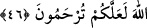
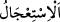
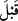

53. Îman edip Allâh’a karşı gelmekten sakınanları ise kurtardık.
“Andolsun ki,” ortağı olmayan “Allah’a kulluk edin!” (demesi için) Semûd kavmine
kardeşleri” aralarında emânet ve doğrulukla tanınan peygamber “Sâlih’i gönderdik.”
Semûd, Araplardan puta tapan bir kabile idi.
“Hemen birbiriyle çekişen iki zümre oluverdiler.”
“
” birbirine düşmanlık besleyip kavga/savaş etmek demektir. Asıl anlamı, iki
taraftan her birinin diğerinin yanından yapışması/ karşısındakini kendi tarafına çekmeye
çalışmasıdır. Yâni onlar birden ayrılmaya ve çekişmeye başladılar. Bir grup îman etti,
bir grup inkâr etti. Sonra onlar iki grup oldular, mümin ve kâfir. Birbirleriyle düşman
olup savaşa tutuştular.
Kâşifî der ki: “Onların düşmanlıkları A’râf sûresinde zikredildi.” Nitekim orada
şöyle buyrulmuştur: “Kavminin ileri gelenlerinden büyüklük taslayanlar, içlerinden
zayıf görülen inananlara dediler ki: “Siz Salih’in, Rabbi tarafından gönderildiğini
biliyor musunuz?” Onlar da: “Şüphesiz biz onunla ne gönderilmişse ona
inananlarız” dediler. Büyüklük taslayanlar dediler ki: “Biz de sizin inandığınızı
inkâr edenleriz.” (el-A’râf, 7/75-76).
46. Sâlih dedi ki: “Ey kavmim! İyilik dururken niçin kötülüğe koşuyorsunuz?
Allah’tan mağfiret dileseniz olmaz mı? Belki size merhamet edilir.”
“Sâlih” inkâr edenlere “dedi ki: Ey kavmim! İyilik dururken niçin kötülüğe
koşuyorsunuz?” Niçin tevbeden önce azâbın acele gelmesini istiyorsunuz ve “vaad
ettiğin azâbı getir.” diyorsunuz ve azâbın iniş vaktine kadar tevbeyi geciktiriyorsunuz?
“
” bir şeyi vaktinden önce istemektir.
Onlar, câhilliklerinden ve sapıklıklarından dolayı “Onun bizi tehdîd edip korkuttuğu
gerçekleşirse, o zaman tevbe ederiz. Aksi halde bulunduğumuz halde devam ederiz.”
diyorlardı.
Keşfü’l-esrâr’da der ki: “Burada “ ”nin mânâsı, zamanın tekaddümü değil, belki
rütbe ve ihtiyârın tekaddümüdür. Bir kimsenin “Beden sağlığı mal çokluğundan
öncedir.” demesi gibi.
“Allah’tan mağfiret dileseniz olmaz mı?” Niçin azap inmeden önce istiğfar
etmiyorsunuz ve îman edip tövbe ile neden Allah’tan bağışlanma talep etmiyorsunuz?
“Belki” tevbeniz kabul olunup “size merhamet edilir.” Böylece azâba uğramazsınız.